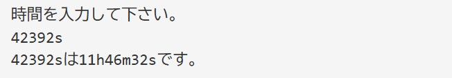
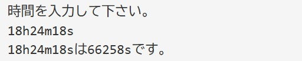
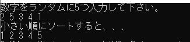
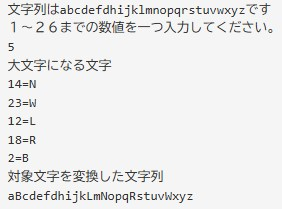
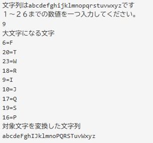
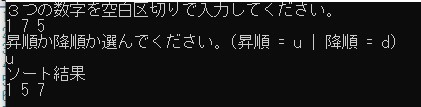
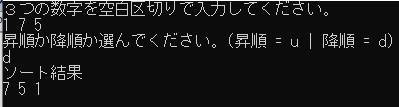

言語課題一覧
Q1 Time-converter
秒で入力された時間は時分秒に、時分秒で入力された時間は秒に変換するプログラムを作成してください。
各単位は、時間＝ｈ、分＝ｍ、秒＝ｓとします。
入力は１行、空白は含まれず、数値に上限はないものとします。
なお、２種類以上の言語でそれぞれ実装するように。
入出力例
例１
入力：42392s

例2
入力：18h24m18s

Q2 Ascending sort for C++
5つの数字を入力して、小さい順に並べ替えて表示するプログラムをC++で作成せよ。
なお、paiza.ioの使用は禁止。
入出力例
例１
入力：2 5 3 4 1

Q3 Random uppercase translator
１～26までの文字列を入力したら、入力された文字列の数だけ乱数を生成し、
アルファベット順で、生成された数番目のアルファベットを大文字に変換するプログラムをC言語、Javaでそれぞれ作成せよ。
なお、paiza.ioの使用は禁止。
※生成される乱数は１～２６までとする。
入出力例
例１
入力：5

例２
入力：9

Q4 Ascending/Descending sorting
入力された3つの数字を昇順か降順を選択して
ソートするプログラムを作成してください。
言語の指定はありません。
入出力例
例１
入力
1 7 5
u

例２
入力
1 7 5
d
